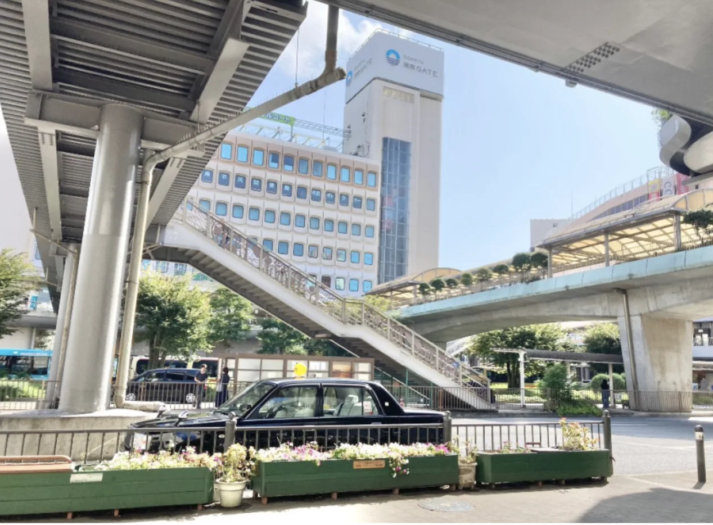
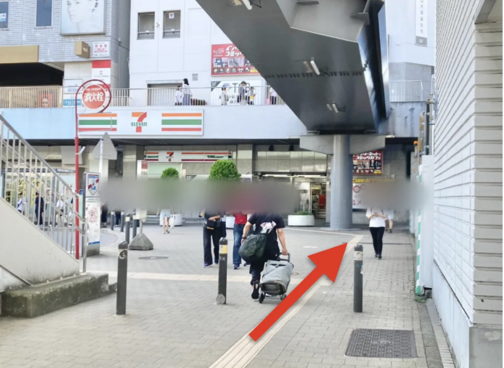
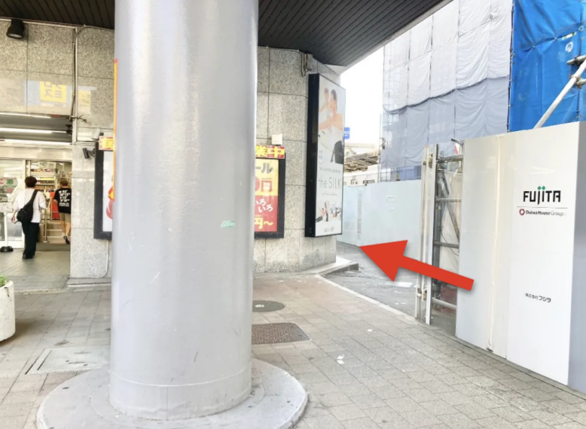
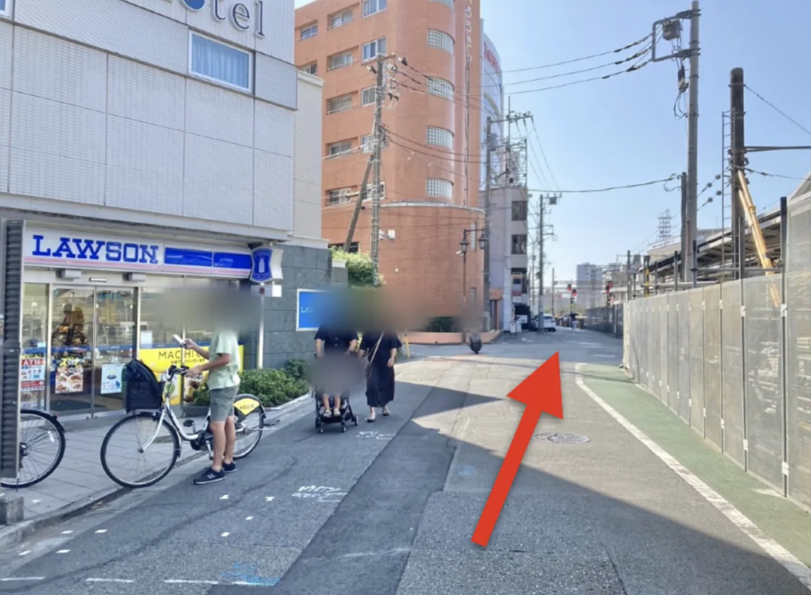
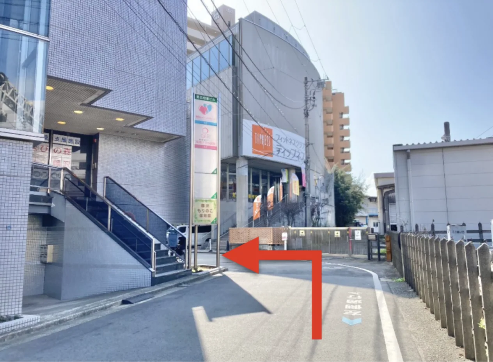
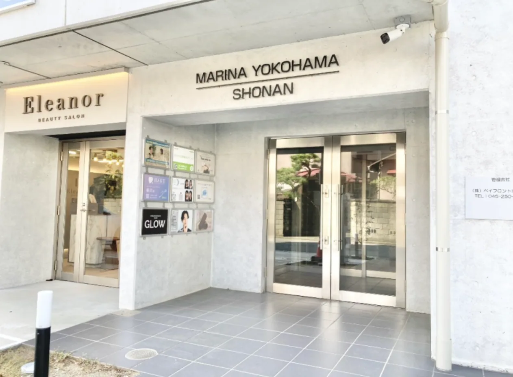
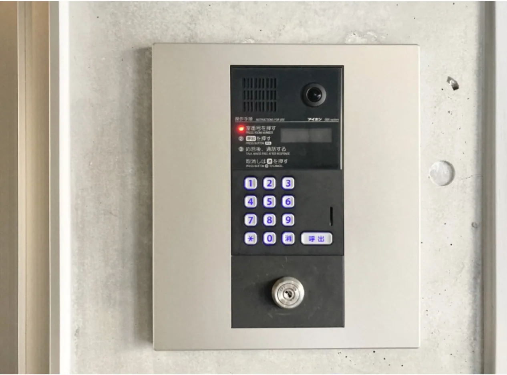
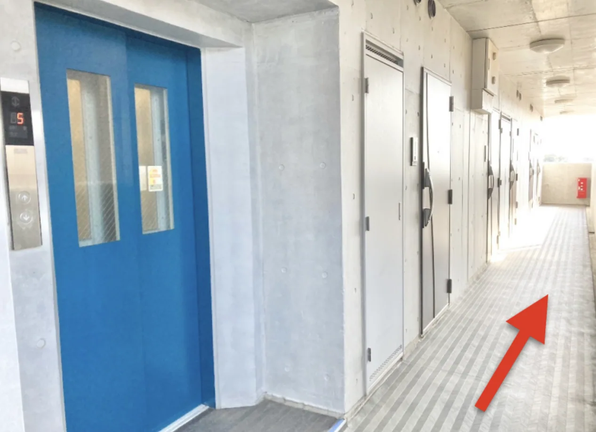
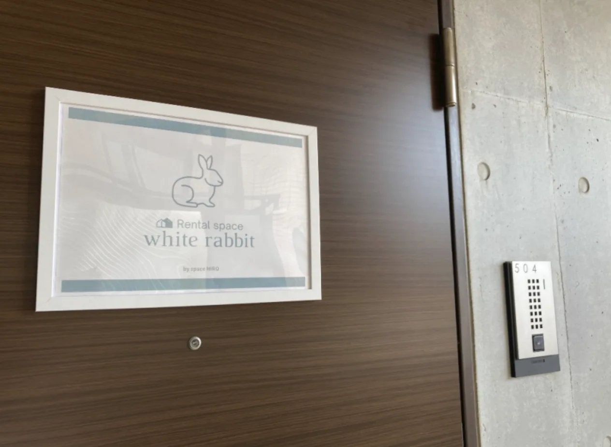

Rental salon white rabbit
藤沢店｜写真付きアクセス案内
藤沢駅南口ロータリーから徒歩約3分
所在地
神奈川県藤沢市鵠沼花沢町13-4
MARINA YOKOHAMA SHONAN 504号室
最寄り駅
JR藤沢駅
（藤沢駅南口ターミナルより徒歩3分）
写真を見ながらお越しください。建物のエントランスでは、【504】を呼び出してください。

STEP 1
藤沢駅南口ロータリーに出ます。

STEP 2
ロータリー右手にあるセブンイレブン方向に進みます。

STEP 3
セブンイレブンのビル横の路地（線路沿い）を辻堂方面に向かって進みます。

STEP 4
線路沿いを道なりに突き当たりまで進みます。

STEP 5
突き当たりの「ティップネス」で左折します。

STEP 6
「ティップネス」の隣にあるコンクリートの建物「MARINA YOKOHAMA SHONAN」が当サロンのある建物です。

STEP 7
【504】を呼び出しオートロックのエントランスをお通り下さい。

STEP 8
エレベーターで5階へお上がりください。降りたら左へ進み、504号室に向かいます。

STEP 9
white rabbitの表示がある504号室がサロンです。